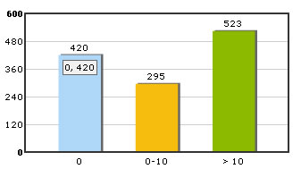

| Using > character in FusionCharts XML |
|
Though you can directly use > characters in FusionCharts XML this is invalid character from XML perspective. To use >, you first need to convert it into >. This conversion makes the XML a valid one. Let's see an example to clear the concepts : |
| <graph decimalprecision='0' > <set name='0' value='420' color='AFD8F8' /> <set name='0-10' value='295' color='F6BD0F' /> <set name='> 10' value='523' color='8BBA00' /> </graph> |
In the above code, we're first defining the names after converting > to > When you now see the chart, you'll get the following: |
|  |
| Note that due to XML restrictions, you can not use < character or < anywhere in FusionCharts Free. |